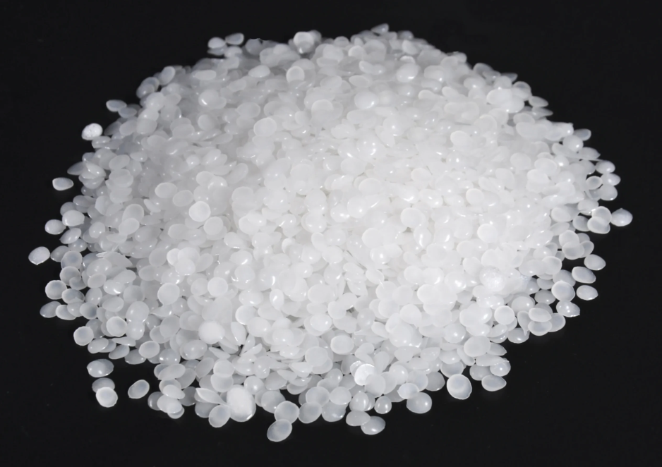

Polyethylene Wax Overview
Polyethylene Wax is a high-performance synthetic wax used in many industrial formulations where lubrication, dispersion, hardness, and thermal stability are important. It is a low-molecular-weight polyethylene material that works especially well in plastics, coatings, inks, adhesives, rubber, and masterbatch production.
What It Is
Polyethylene wax, often called PE wax, is a wax-like polymer derived from ethylene and produced in forms such as powder, flakes, granules, or pellets. It is typically non-polar, hydrophobic, and chemically inert, which gives it strong compatibility in hydrocarbon-based systems and many polymer applications. Its key physical characteristics include a high melting point, low viscosity, high hardness, abrasion resistance, and excellent thermal stability. Depending on the production method and grade, PE wax may be made through direct polymerization, thermal cracking, or recovery from other polyethylene processes.
Main Benefits
One of the biggest advantages of Polyethylene Wax is its ability to improve processing efficiency. It acts as an internal and external lubricant, helping reduce friction, improve flow, and support smoother manufacturing in plastics and rubber production. PE wax is also valued for its dispersing ability, especially in masterbatch, coatings, and inks, where it helps pigments and additives distribute more evenly. In addition, it can improve gloss, surface quality, anti-blocking performance, and mold release, making finished products more consistent and easier to process.
Typical Applications
Polyethylene Wax is widely used in PVC processing, color masterbatch, hot-melt adhesives, printing inks, powder coatings, polishes, cosmetics, and rubber compounds. In plastics, it is especially useful as a processing aid and lubricant that supports better output and product finish. It is also used as a release agent and anti-stick additive in coatings and polymer systems, helping prevent surfaces from bonding where they should not. In cosmetic and personal care products, lower-grade PE waxes can contribute to texture, stability, and consistency.
Why Choose It
Polyethylene Wax is a smart choice for manufacturers who need a reliable additive that performs consistently under heat and processing stress. Its combination of lubricity, hardness, chemical resistance, and thermal stability makes it suitable for a broad range of industrial uses. While our core expertise is bitumen, we also source and supply related commodities like Polyethylene wax for verified buyers.
